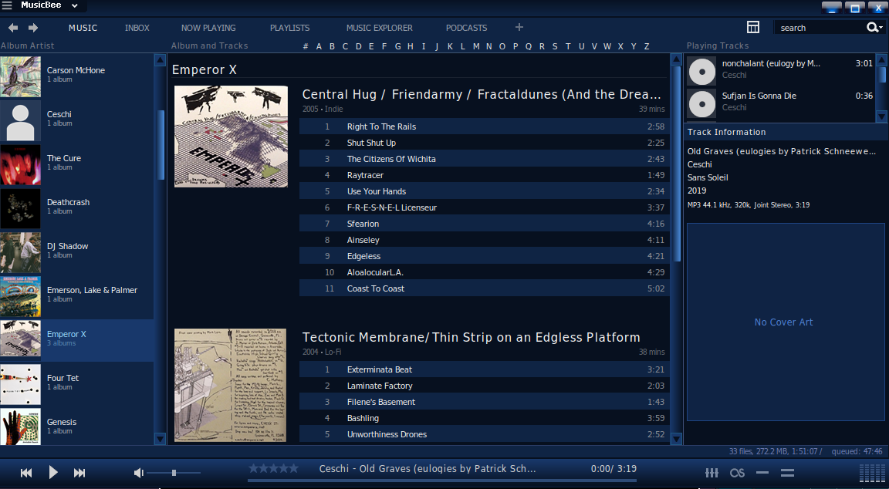

MusicBee Windows

This had what I had hypothetically wanted with a local music player, with many customization and data tagging features. It is very easy to change information of groups of songs or albums by Control clicking tracks in your library and changing fields like artists and albums. You can also convert audio types, possibly rip CD's, syncing music to a phone, etc./p>
This program's queuing system is what I've liked the most out of all the music programs here. There is a dedicated next context menu that allows me to stack a bunch of queued tracks to play next, without it getting scrambled. There is also a queue last option, so if I want to add more songs at the end of the playlist, it remains at the end.
Most customization is built into the player, with draggable panels and dropdown menus that can hide certain features from the user interface. There are a lot of themes you can switch into, and those themes will instantly take effect. It can change button and panel appearance. The theme used in the image is Midnight.
Even with its amount of features, you can get more features and themes into the player using community add-ons.
This program is Windows only, so I had to once again use WINE to run it. In order to have it run, you have to load these components within WINE: cjkfonts, dotnet48, xmllite, and gdiplus.
You'd also need to find a Bass_aac.dll file so that certain file types could load, and lib32-gnutls for some internet connections to work smoothly. This component will vary by operating system.
Unfortunately some features I use daily such as syncing needs further configuration from WINE I had not figured out yet. For the syncing example, WINE on its own cannot detect plugged in devices such as phones and CD drives. Performance is also not the best.
Visit Website